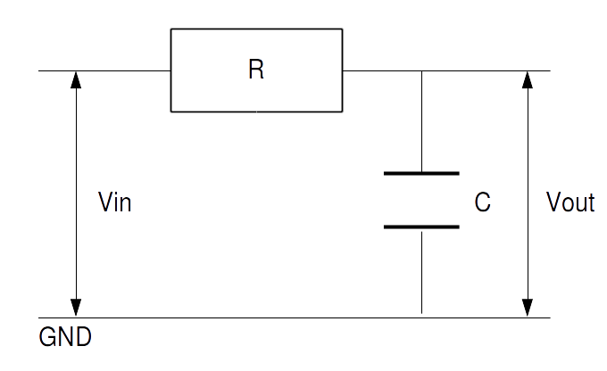

ここではインパルス不変法を用いて標準形 1 次 IIR ローパスフィルタを設計したいと思います。
インパルス不変法はまずアナログフィルタのインパルス応答を求め、それをサンプリングしてディジタルフィルタのインパルス応答にするという方法です。
さて最も基本的なアナログローパスフィルタは以下の回路図で表されるRCローパスフィルタなので、これをベースとして考えていきます。

RC ローパスフィルタの(アナログ)伝達関数と周波数特性とインパルス応答は簡単に求められ、それぞれ以下の通りになります。
カットオフ角周波数を $w_c = \frac{1}{RC}$ [rad/秒] とする。
\begin{align*} \textrm{H}(s) & = \frac{ 1 }{ 1 + RC\cdot s } \\ & = \frac{ 1 }{ 1 + \frac{s}{w_c} } \\ & = \frac{ w_c }{ s + w_c } \\ \end{align*}(求め方)
$V_{in}(t)$ を入力電圧(正弦波とする)のフェーザ表示、$I(t)$ を回路内を流れる電流のフェーザ表示とすると、
\[ V_{in}(t) = \left \{ R + \frac{1}{j \cdot \textrm{C} \cdot w} \right \} \cdot I(t) \]であるから、$V_{out}(t)$ をコンデンサの両端にかかる電圧のフェーザ表示とすると
\begin{align*} V_{out}(t) &= \frac{1}{j \cdot \textrm{C} \cdot w} \cdot I(t) \\ &= \frac{ \frac{1}{j \cdot \textrm{C} \cdot w} }{ R + \frac{1}{j \cdot \textrm{C} \cdot w} } \cdot V_{in}(t) \\ &= \frac{ 1 }{ 1 + j \cdot RC \cdot w } \cdot V_{in}(t) \\ \end{align*}よって $j\cdot w = s$ を代入してラプラス変換にすることで
\[ \textrm{H}(s) = \frac{ V_{out}(t) }{ V_{in}(t) } = \frac{ 1 }{ 1 + RC\cdot s } \]が求められる。
伝達関数に $s = j\cdot w$ を代入して
\begin{align*} \textrm{H}(w) & = \frac{ w_c }{ j\cdot w + w_c } \\ & = \frac{ w_c }{ \sqrt{w^2 + w_c^2 } \cdot \textrm{e}^{ j\cdot \tan^{-1}(w/w_c) } } \\ & = \frac{ w_c }{ \sqrt{w^2 + w_c^2 }} \cdot \textrm{e}^{ -j\cdot \tan^{-1}(w/w_c) } \\ & = \frac{ w_c }{ \sqrt{w^2 + w_c^2 }} \cdot \textrm{e}^{ j\cdot \tan^{-1}(-w/w_c) } \\ \end{align*}よって振幅特性(ゲイン)と位相特性はそれぞれ
\[ |\textrm{H}(w)| = \frac{ w_c }{ \sqrt{w^2 + w_c^2 }} \] \[ \angle \textrm{H}(w) = \tan^{-1}(-w/w_c) \]$1/(s-a)$の逆ラプラス変換は $\textrm{e}^{at}$ なので、伝達関数を逆ラプラス変換すると
\begin{align*} h(t) & = w_c \cdot \textrm{e}^{-w_c\cdot t} \end{align*}
あとはこの RC ローパスフィルタのインパルス応答をサンプリング間隔 $\tau$ [秒] でサンプリングしてディジタルフィルタのインパルス応答 $h[i]$ を求めます。
ただしそのままだと$\tau$の大小で振幅特性(ゲイン)が変化してしまうので、振幅特性を一定にするために $\tau$ をかけます。
※ このページの一番下にあるIIRフィルタの周波数特性の導出式をみると分かりますが $\tau$ は最終的にキャンセルされます
$\tau$ [秒] をサンプリング間隔とした時、
\begin{align*} h[i] = \tau \cdot h(\tau \cdot i ) = \tau \cdot w_c \cdot \textrm{e}^{-w_c \cdot \tau \cdot i} \end{align*}よって IIR ローパスフィルタの伝達関数は次の様になります。
(求め方)
インパルス応答の両辺を Z 変換して
\begin{align*} \textrm{H}(z) &= \sum_{i=0}^\infty \{ h[i] \cdot z^{-i} \} \\ &= \sum_{i=0}^\infty \{ \tau \cdot w_c \cdot \textrm{e}^{-w_c \cdot \tau \cdot i} \cdot z^{-i} \} \\ &= \tau \cdot w_c \cdot \sum_{i=0}^\infty \{ \textrm{e}^{-w_c \cdot \tau} \cdot z^{-1} \}^i \end{align*}等比数列の Z 変換の計算方法を利用して伝達関数 $\textrm{H}(z)$ を標準形に変形すると
\begin{align*} \textrm{H}(z) = \frac{ \tau \cdot w_c }{ 1 - \textrm{e}^{-w_c \cdot \tau} \cdot z^{-1} } \end{align*}これより、フィルタ係数は以下の通りになります。
またIIRフィルタのプログラム表現は 1 次IIRフィルタであること、$b[1]=0$ であることから次の様に簡易化出来ます。
z[n] を n 時刻前の☆の位置における値とする
z[0] = x[i] + a[1]*z[1]; y[i] = b[0]*z[0]; z[1] = z[0];
次にこのIIR ローパスフィルタの周波数特性を求めます。
厳密解を求めるのもそれほど難しくありませんが、今回は以下の様にして近似解を求めてみましょう。
伝達関数に $z = \textrm{e}^{j \cdot w \cdot \tau}$ を代入して周波数特性 $\textrm{H}(w)$ を求めると
\begin{align*} \textrm{H}(w) &= \frac{ w_c \cdot \tau }{ 1 - \textrm{e}^{-w_c \cdot \tau} \cdot \textrm{e}^{-j\cdot w \cdot \tau} } \end{align*}$|x|$ が十分小さい時、$\textrm{e}^{x}$ をマクローリン展開すると $ \textrm{e}^x \approx 1+x$ と近似できるから、$|w_c\tau|$ が充分に小さい時
\begin{align*} \textrm{H}(w) &\approx \frac{ w_c \cdot \tau }{ 1 - (1-w_c \cdot \tau) \cdot (1-j\cdot w \cdot \tau) } \\ &= \frac{ w_c \cdot \tau }{ 1 - (1 - j\cdot w \cdot \tau -w_c \cdot \tau + j \cdot w_c \cdot w \cdot \tau^2) } \\ (\tau^2 \approx 0 とみなして) &= \frac{ w_c \cdot \tau }{ j \cdot w \cdot \tau +w_c \cdot \tau } \\ &= \frac{ w_c}{ j \cdot w + w_c } \end{align*}よってカットオフ角周波数 $w_c$ [rad/秒] があまり高くなく、かつサンプリング間隔 $\tau$ [秒]が充分に小さければ(つまりサンプリング周波数が充分に高ければ)、標準形 1次 IIR ローパスフィルタの周波数特性は 1次 RC ローパスフィルタの周波数特性に近似されることが分かります。